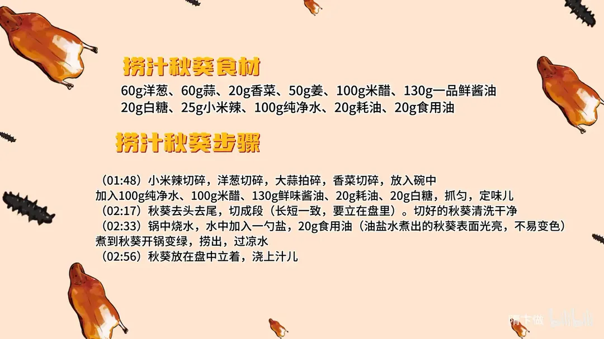
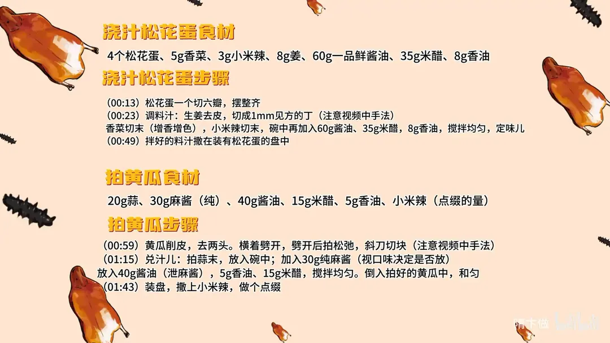
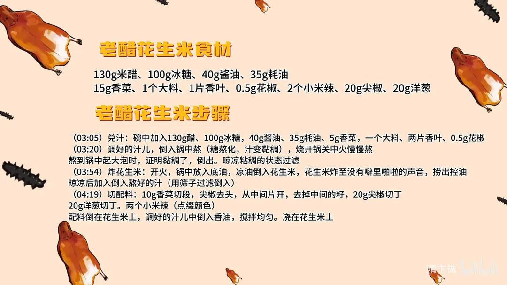

凉菜合集
隋卞一做。四道凉菜一桌：松花蛋切六瓣，浇 60g 一品鲜酱油调的汁；拍黄瓜用 30g 纯麻酱、40g 酱油澥开拌；秋葵在油盐水里焯到变绿，立盘浇 130g 酱油兑的捞汁；花生米凉油炸脆，浇 130g 米醋加冰糖熬的老醋汁。
原视频：https://www.bilibili.com/video/BV1Gw4m197fR
食材
松花蛋、黄瓜、秋葵、花生米 等 38 样
| 类别 | 用料 | 用量 |
|---|---|---|
| 松花蛋 | 松花蛋 | 4个 |
| 松花蛋 | 一品鲜酱油 | 60g |
| 松花蛋 | 米醋 | 35g |
| 松花蛋 | 香油 | 8g |
| 松花蛋 | 香菜 | 5g |
| 松花蛋 | 小米辣 | 3g |
| 松花蛋 | 姜 | 8g |
| 拍黄瓜 | 黄瓜 | 适量 |
| 拍黄瓜 | 麻酱（纯） | 30g |
| 拍黄瓜 | 酱油 | 40g |
| 拍黄瓜 | 蒜 | 20g |
| 拍黄瓜 | 米醋 | 15g |
| 拍黄瓜 | 香油 | 5g |
| 拍黄瓜 | 小米辣 | 点缀的量 |
| 秋葵 | 秋葵 | 适量 |
| 秋葵 | 一品鲜酱油 | 130g |
| 秋葵 | 米醋 | 100g |
| 秋葵 | 纯净水 | 100g |
| 秋葵 | 洋葱 | 60g |
| 秋葵 | 蒜 | 60g |
| 秋葵 | 姜 | 50g |
| 秋葵 | 小米辣 | 25g |
| 秋葵 | 香菜 | 20g |
| 秋葵 | 白糖 | 20g |
| 秋葵 | 蚝油 | 20g |
| 秋葵 | 食用油 | 20g |
| 花生米 | 花生米 | 适量 |
| 花生米 | 米醋 | 130g |
| 花生米 | 冰糖 | 100g |
| 花生米 | 酱油 | 40g |
| 花生米 | 蚝油 | 35g |
| 花生米 | 香菜 | 15g |
| 花生米 | 大料 | 1个 |
| 花生米 | 香叶 | 1片 |
| 花生米 | 花椒 | 0.5g |
| 花生米 | 小米辣 | 2个 |
| 花生米 | 尖椒 | 20g |
| 花生米 | 洋葱 | 20g |
步骤
- 浇汁松花蛋·切蛋：松花蛋一个切六瓣，整齐摆放在盘中。
- 浇汁松花蛋·调汁：生姜去皮，切成 1mm 见方的小丁；香菜切末，增香增色；小米辣切末。碗中加 60g 一品鲜酱油、35g 米醋、8g 香油，搅拌均匀定味儿。
- 浇汁松花蛋·浇汁：拌好的料汁撒在装有松花蛋的盘中即可。
- 拍黄瓜·处理黄瓜：黄瓜削皮、去两头，横着劈开，劈开后拍松弛，再斜刀切块。
- 拍黄瓜·兑汁：蒜拍成末放入碗中，加 30g 纯麻酱（视口味决定是否放）、40g 酱油（用来澥麻酱）、5g 香油、15g 米醋，搅拌均匀，倒入拍好的黄瓜中拌匀。
- 拍黄瓜·装盘：装盘，撒上小米辣做个点缀。
- 捞汁秋葵·兑捞汁：小米辣切碎，洋葱切碎，大蒜拍碎，香菜切碎，一起放入碗中；加 100g 纯净水、100g 米醋、130g 一品鲜酱油、20g 蚝油、20g 白糖，抓匀定味儿。
- 捞汁秋葵·处理秋葵：秋葵去头去尾，切成段，长短要一致，方便立在盘里；切好的秋葵清洗干净。
- 捞汁秋葵·焯水：锅中烧水，水里加一勺盐和 20g 食用油，水开后下秋葵，煮到开锅变绿捞出，过凉水。
- 捞汁秋葵·装盘：秋葵立在盘中，浇上调好的捞汁。
- 老醋花生米·兑汁：碗中加 130g 米醋、100g 冰糖、40g 酱油、35g 蚝油、5g 香菜，再放一个大料、两片香叶、0.5g 花椒。
- 老醋花生米·熬汁：调好的汁倒入锅中熬，糖熬化、汁变黏稠后烧开锅，关中火慢慢熬，熬到锅中起大泡说明黏稠够了，倒出晾凉并过滤。
- 老醋花生米·炸花生米：开火，锅中放底油，凉油倒入花生米，炸至没有噼里啪啦的声音捞出控油；晾凉后倒入熬好的汁，用筛子过滤着倒。
- 老醋花生米·拌制：10g 香菜切段；尖椒去头，从中间片开去掉籽，切 20g 尖椒丁；20g 洋葱切丁；两个小米辣切好点缀颜色。配料倒在花生米上，熬好的汁里倒入香油搅匀，浇在花生米上。
小贴士
- 老醋花生米的香叶，食材表写 1 片、步骤写两片，按口味取量。
- 花生米一定凉油下锅，炸到没有噼啪声立刻捞出，晾凉后才脆。
讲解要点
难度：★★☆☆☆（四道都是拌菜，难点是老醋汁的火候和花生米的油温）
为什么这么做
浇汁松花蛋
- 刀上沾水、一个切六瓣：松花蛋的蛋黄黏，刀面沾水就不粘刀；六瓣大小刚好，一瓣一口，瓣再多容易碎。
- 姜末切到 1mm 见方：姜是这道菜的香气来源，切得够细才不会咬到姜粒，也更容易和醋、酱油融进汁里。
拍黄瓜
- 先去皮、劈开再拍，麻酱用酱油澥开：去皮口感更脆嫩，劈开后再拍才拍得松弛、裂缝多、挂汁也匀；麻酱直接拌会坨成块，用酱油澥稀了才能裹匀，不吃麻酱可以不放。
捞汁秋葵
- 油盐水焯、见绿就捞、马上过凉：油盐水焯过的秋葵表面光亮、不容易变色；煮久了会软塌出黏液，见绿即捞过凉才脆得住。
- 切段长短一致、立着摆盘：长短齐才好立在盘里，浇汁顺着往下淌，好看也入味。
老醋花生米
- 冰糖小火熬到起大泡：小火才化得开糖又不焦，熬到锅里咕咕冒泡说明黏稠够了，才挂得住花生米。
- 花生米凉油下锅、听声转小火，汁和花生都凉了再拌：凉油慢慢升温里面才炸透，听到密集的爆声就转小火；热着拌，花生米会回软不脆。
容易翻车
- 松花蛋刀不沾水，蛋黄糊刀，瓣切得不成形。
- 黄瓜没劈开就拍，拍得烂碎，拌完一汪水。
- 秋葵焯久了软塌，或者没马上过凉，颜色发暗、黏液多。
- 老醋汁大火熬，糖焦了发苦；熬得太稀又挂不住花生米。
- 花生米炸过头，晾凉后发苦发硬；醋汁热着就拌，花生回软。
原片尾卡



原片文案
AI 字幕校准稿
夏天了，教你们几个小凉菜，好几个菜，咱们一起一个视频发。第一个，浇汁松花蛋。
切的时候刀上沾点水，一个切六瓣，这个大小刚刚好。姜末切一毫米见方，香菜末增加一个香味，也增加点颜色，再来点辣椒末，然后酱油、米醋、香油。
其实凉菜主要就是这个汁，克数都给你写得很清楚，做起来应该都很简单。这个汁浇上去，会更凸显松花蛋本身的香味，酸味也没有那么冲。
下一个，拍黄瓜。黄瓜去皮，两头去了，中间劈一刀，这样拍才好拍，拍松弛。拍点蒜，先按一下，然后再拍。
我吃带麻酱的，你要是不喜欢吃麻酱，可以不放。里边放点酱油、香油、醋，也可以放辣椒油，来一勺也可以。装盘，切几个小米辣做个点缀，这是我最爱吃的味道。
下面咱们做一个捞汁秋葵。洋葱切碎，大蒜拍了，香菜切了，再来点小米辣，加纯净水、米醋、鲜味酱油、蚝油、白糖，把里边的所有原料抓一下，妥妥的。
秋葵切成长短一致，一会咱们要把它立到盘里边，切好洗一下。秋葵烧点水再煮一下，水里边加点盐、加点油，油盐水煮完的秋葵表面光亮光亮的，不容易变色。
水烧开，我们倒入秋葵，焯秋葵的水稍微宽一点；开锅变绿咱就捞，你看这水都是粘的。过凉装盘，立到盘中，浇上汁，就这。
这个捞汁是通用的，捞一切。酸和一点点的辣，然后酱油味道也特别香，洋葱、香菜和蒜的味道也都在里面了，整个味道非常好。
第四个，老醋花生米。先兑汁：醋、冰糖、酱油、蚝油，加香菜、大料、香叶、花椒。把这个调好的汁搁里边熬一下，拍一半蒜搁进去。
把这冰糖熬化，慢慢熬就行，千万别大火。看着锅里咕咕冒着泡就可以了，证明这已经粘稠了，倒出来。
炸花生米，花生米凉油直接下，随着温度的升高，花生米开始一会爆，啪啪啪的，听声。这会儿要关小火，快速扒拉，还可以适当加点凉油。
趁热捞出来，倒在一个大盘里晾凉；如果这个火候炸得稍微有点要过了，倒出来以后搁通风的地方吹凉，它不就好一点。切点香菜、尖椒，再切点洋葱、小米辣配点颜色。
这个菜呢，需要等那个熬的醋汁和花生米都凉了以后再拌。里面倒一滴香油，香油得最后倒。真好吃，刚刚好能激发香味的那个甜，一点点也不油也不腻。
其实网上有很多说我教你一个招、可以拌一切凉菜，但你看我们今天这四个都不太一样，每一个都特别好吃。把今天这四个都学会了，再稍微融会贯通一下，应付家里日常 80% 的凉菜就没啥问题了。大家试一下。